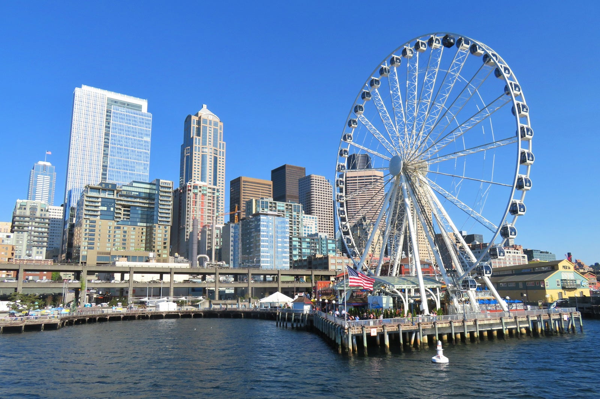
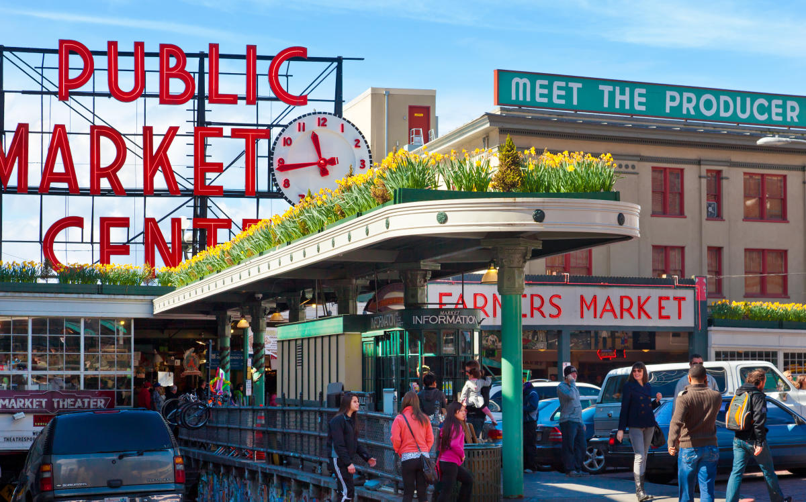

-Space Needle-
-Space Needle-
It wouldn't be Seattle without the Space Needle. Sitting at 605 feet tall, the tower has a spinning observation deck with a glass floor,
so you can see how high up you are. There's also a restaurant, on the spinning deck. Hopefully you don't have a fear of heights.

-The Seattle Great Wheel-
At 175 feet tall, the Seattle Great Wheel was the tallest ferris wheel on the West Coast when it opened in 2012.
You can even have dinner on the ferris wheel with a great view of the ocean and the city.

-Pike Place Market-
Pike Place Market is the most popular destination in Seattle. It's the oldest running fish market in the US, but they do sell more than
just fish. The famous gum wall is also located here.